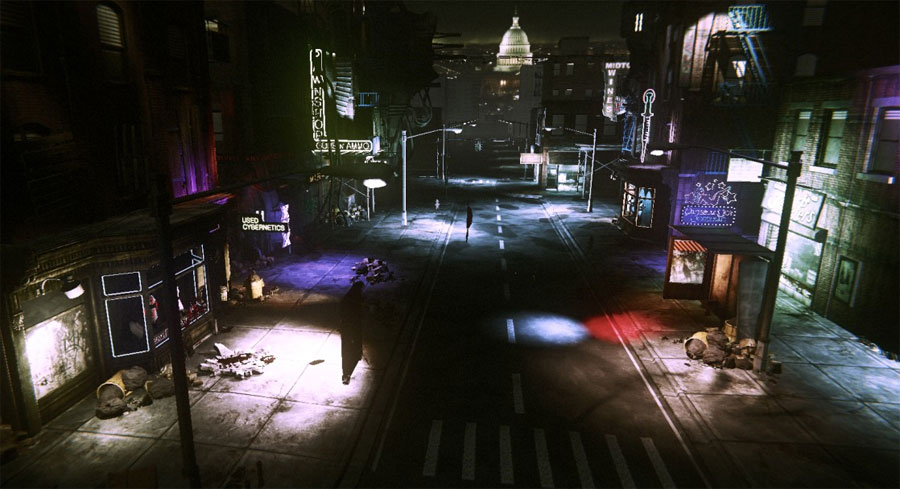
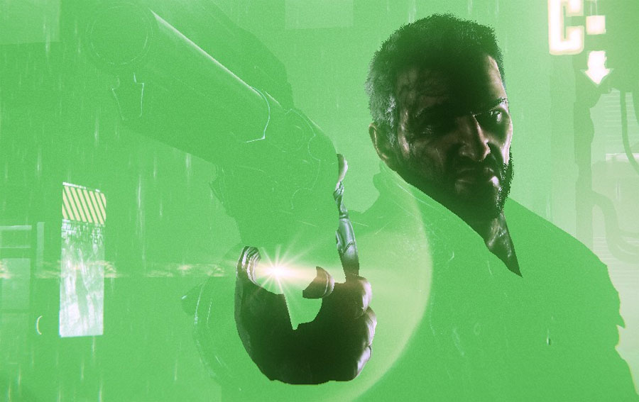

UDN
Search public documentation:
DeferredShadingDX11CH
English Translation
日本語訳
한국어
Interested in the Unreal Engine?
Visit the Unreal Technology site.
Looking for jobs and company info?
Check out the Epic games site.
Questions about support via UDN?
Contact the UDN Staff
日本語訳
한국어
Interested in the Unreal Engine?
Visit the Unreal Technology site.
Looking for jobs and company info?
Check out the Epic games site.
Questions about support via UDN?
Contact the UDN Staff
UE3 主页 > 虚幻引擎 3 中的 DirectX 11 > DirectX 11 中的延迟着色
UE3 主页 > 光照 & 阴影 > DirectX 11 中的延迟着色
UE3 主页 > 光照美工人员 > DirectX 11 中的延迟着色
UE3 主页 > 光照 & 阴影 > DirectX 11 中的延迟着色
UE3 主页 > 光照美工人员 > DirectX 11 中的延迟着色
DirectX 11 中的延迟着色
文档变更记录: 由 Daniel Wright 创建。
概述
存储在 GBuffer 中的材质属性可视化。 (点击获得完整尺寸)
 使用延迟着色渲染的光源要比使用直向光照渲染的光源快 10 倍。在 GDC 2011 技术演示中，其中演示的场景里有 123 个动态光源，使用延迟着色对所有光照进行渲染，角色皮肤和头发上的光照除外。注意，延迟着色不会加速动态阴影，它已经在 UE3 中延迟，所以它不允许您具有上百上千的动态阴影光源。
使用延迟着色渲染的光源要比使用直向光照渲染的光源快 10 倍。在 GDC 2011 技术演示中，其中演示的场景里有 123 个动态光源，使用延迟着色对所有光照进行渲染，角色皮肤和头发上的光照除外。注意，延迟着色不会加速动态阴影，它已经在 UE3 中延迟，所以它不允许您具有上百上千的动态阴影光源。GDC 2011 技术演示的屏幕截图，其中显示了 123 个用来照亮角色和环境的动态光源的漫反射部分。

GDC 2011 技术演示的屏幕截图，其中使用延迟着色照亮的像素已经被涂抹为绿色。
大体说来，延迟着色的目的是进行透明优化使其可以与标准直向光照结合使用。目前还没有可以显示场景中哪些部分使用延迟着色以及哪些部分使用直向渲染的工具，但是这些事实上很有用，我们计划添加此类工具。限制
- 材质是透明的，使用的是 Phong 光照模式，没有使用次表面散射
- 网格物体使用的是其中一个受支持的光照通道 (Dynamic, Cinematic 1-3)。BSP、静态及动态的都被视作是同一个通道。
- 光源是一个可移动的点，使用其中一个受支持的光照通道 (Dynamic, Cinematic 1-3) 的点光源或方向型光源。BSP、静态及动态的都被视作是同一个通道。
- 材质漫反射值限定在 0 到 1 之间
- 材质高光值限定在 0 到 1 之间
- 材质高光强度限定在 0 到 500 之间
过场动画光照
此外，使用 bNonModulatedSelfShadowing 或 bSelfShadowOnly 的光源具有使用延迟着色的快速方法。